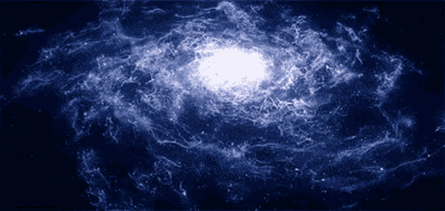
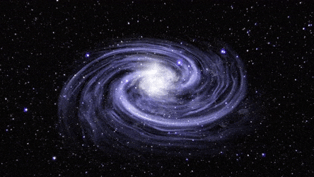

Our Milky Way Galaxy is just one of billions of galaxies in the universe. Within it, there are at least 100 billion stars, and on average, each star has at least one planet orbiting it. This means there are potentially thousands of planetary systems like our solar system within the galaxy!

Our Sun is one of at least 100 billion stars in the Milky Way, a spiral galaxy about 100,000 light-years across. The stars are arranged in a pinwheel pattern with four major arms, and we live in one of them, about two-thirds of the way outward from the center. Most of the stars in our galaxy are thought to host their own families of planets.The Milky Way galaxy is just one of billion of galaxies in the universe. Most of the stars in our galaxy are thought to host their own families of planets.
The universe is a vast expanse of space which contains all of everything in existence. The universe contains all of the galaxies, stars, and planets. The exact size of the universe is unknown. Scientists believe the universe is still expanding outward.All of the stars in the Milky Way orbit a supermassive black hole at the galaxy's center, which is estimated to be four million times as massive as our Sun. Fortunately, it is a safe distance from Earth, at around 28,000 light-years away. Our galaxy is one of countless billions in the universe, each having millions, or more frequently billions, of stars of its own.
We call our galaxy the Milky Way because it appeared to ancient observers to be a milky band of light – like a cosmic roadway – stretching across the dark sky. It takes about 230 million years for our solar system to make one revolution around the galactic center.

The Milky Way is part of the Local Group, a neighborhood about 10 million light years across, consisting of more than 30 galaxies that are gravitationally bound to each other.
NASA stands for National Aeronautics and Space Administration. NASA is a U.S. government agency that is responsible for science and technology related to air and space. The Space Age started in 1957 with the launch of the Soviet satellite Sputnik.
NASA opened for business on Oct. 1, 1958. The agency was created to oversee U.S. space exploration and aeronautics research.
Scientists calculate that there are at least 100 billion galaxies in the observable universe, each one brimming with stars. On a very large scale, they form a bubbly structure, in which vast sheets and filaments of galaxies surround gargantuan voids.
The Milky Way zips along a galactic orbit at an average speed of about 514,000 mph (828,000 km/hr). It takes about 230 million years for our solar system to make one revolution around the galactic center.